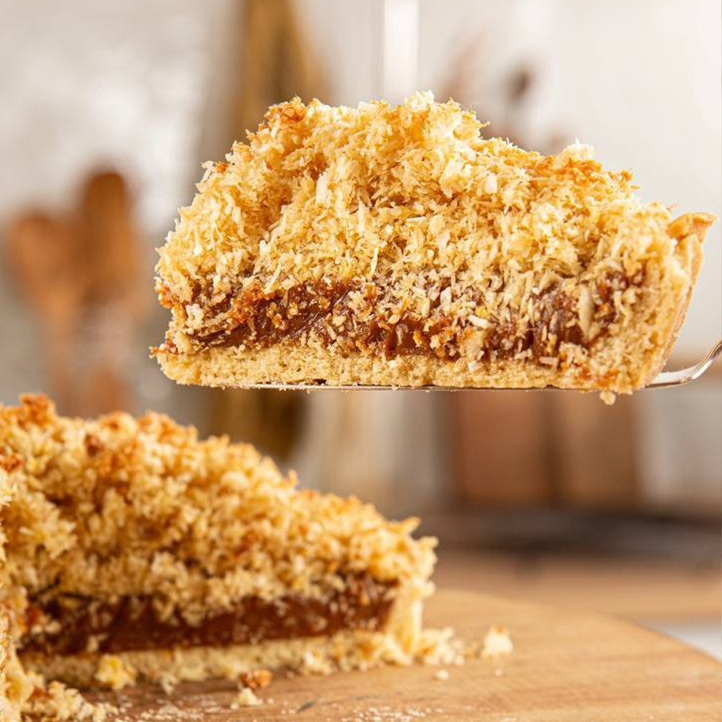

Postres
Tarta de coco
Una receta deliciosa, con la cual podras agasajar a su familia
La tarta de coco es un postre muy sabroso y fácil de hacer.
Esta receta es ideal para una merienda o un cumpleaños.
| Ingrediente para la masa |
Cantidades |
| Harina 0000 |
200 gr |
| Azucar |
50 gr |
| Sal |
Una pizca |
| Manteca |
100 gr |
| Huevo |
1 unidad |
| Ingrediente para el relleno |
Cantidades |
| Dulce de leche repostero |
400 gr |
| Huevos |
2 unidades |
| Leche condensada |
Un pote chico |
| Coco rallado |
200 gr |
| Leche |
1/2 taza |

Paso a paso
- Como primer paso, en un bol colocamos la harina, el azucar, la sal y la manteca.
- Mezclamos bien hasta que se forme una masa homogenea.
- Agregamos el huevo y mezclamos nuevamente.
- Una vez formada una masa homogenea, dejamos reposar 30 minutos en heladera
- Ya pasado este tiempo, enmantecamos un molde, estiramos la masa y cocinamos con horno a 180° por
10 minutos
- Retiramos del horno y dejamos enfriar antes de colocar el relleno
- Con ayuda de una cuchara esparcimos sobre la masa el dulce de leche, tratando de que sea en
forma pareja
- En otro bol colocamos el coco, la leche condensada, los huevos y la media taza de leche.
Mezclamos bien
- Volcamos la mezcla sobre nuestra masa con dulce de leche, llevamos a horno suave, por alrededor
de 40 minutos
- Y listo a disfrutar de una deliciosa tarta de coco
- Esta receta es ideal para acompañar con helado o crema batida.